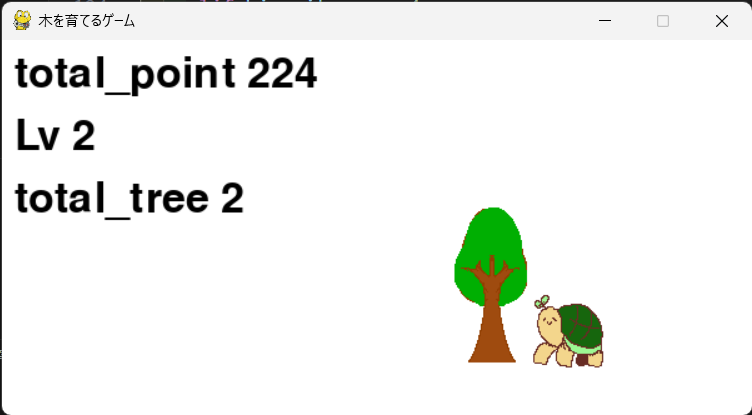
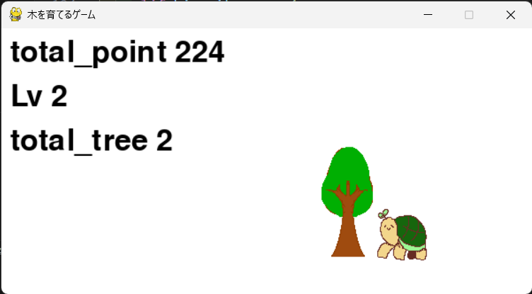

3年生
- 総合課題実習2デジタルアーカイブに参加…2024年5月
- パソコン甲子園モバイル部門に防災知識アプリの企画書を作成して提出…2024年7月予選敗退
- 授業の課題としてJavaScriptに関連する技術解説を作成…2024年7月
作ったもの
クリックすると木が育つクッキークリッカー風のゲーム
ポイントはクリックするたびにたまっていき、木が育つ。木の成長段階は５段階あり、最大まで育つとまた種になる。 また、100pたまるとLvが上がって1秒ごとに1p増えるようになる。そして、ゲームが終了すると、テキストファイルに進行状況がセーブされる。
セーブデータはDataファイル内にあるgame_data.txtを削除することでリセットできる。Dataファイル内にある画像を名前をそのままにして置き換えると 自分好みのクッキークリッカー風のゲームにもなる。 製作時間20時間
 
URLとアプリケーションを開くアプリケーション
.txtにかかれたURLもしくはアプリケーションをまとめて開けるアプリケーションです。添付されている'setweb'もしくは'setapp'にそれぞれ URLとアプリケーションのフルパスを書いた.txtを入れ、アプリ内で選択することで起動できます。レポートの参考文献を書いているときに一気にURLを開ければいいなぁ と思ったので作りました。
なお、アプリケーションを開いた場合、このアプリを終了させると連鎖的に開いたアプリも終了してしまいます。 製作時間12時間


JavaScriptとHTMLで作成したクリッカー
作り方はこちらから。 製作時間30時間
Unity-Study


GitHubリポジトリ:https://github.com/akaumigame6/unity-study/
公開URL:https://unity-study.vercel.app/
Unityについて実際にゲームを作りながら学べるサイトです。サイト内にあるボタンを押すことで実際に機能を追加するとどうなるのか確認しつつ学ぶことが出来ます。
使ったことのある言語・ソフトウェア
授業以外でも使っている言語・ソフトウェア
- C、C++/C#
- Python
- Unity
- Brender
- HTML/CSS
- JavaScript
授業で使ったことのある言語・ソフトウェア
- Arduino
- Scratch
- ArduinoIDE
- Deeds-DCS
- MakeCode for micro:bit
- Tinkercad
- WSL (Windows Subsystem for Linux)